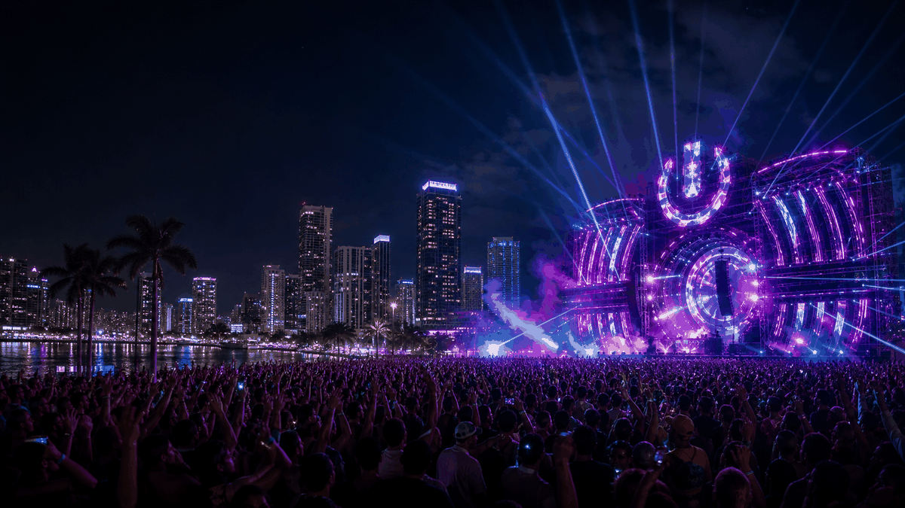
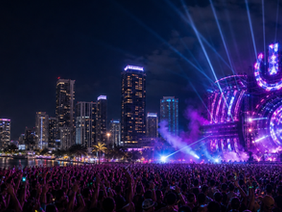

Music Festivals event guide
Ultra Music Festival
A compact OneSliders guide to Ultra Music Festival: what it is and what visitors should check before going.

More Music FestivalsInterested in more Music Festivals?Explore related events, places and calendar moments.
Ultra Music Festival is tracked as an evergreen event so the general guide stays stable while the year slide changes over time.
The year slide holds dates, place and practical questions in one compact view.
The general slide explains the event; the year slide carries selected-year dates, status and planning details.
- Selected editions belong on the year slide.
- Past editions can hold verified archive notes.
- Practical checks stay in the edition slide.
| Year | Host / place | Country |
|---|---|---|
| 2027 | Miami | |
| 2026 | Miami | |
| 2025 | Miami | |
| 2024 | Miami | |
| 2023 | Miami | |
| 2022 | Miami |
Edition guide
Ultra Music Festival 2027
Choose an edition; only this slide changes.
Dates and programme details should be checked close to the event.
Dates are carried from the current OneSliders event index.
Host context:  United States.
United States.
Check the organiser and city transport pages before travel.
Ticket windows and resale rules can change by edition.
Keep the main practical checks on this slide.
The general guide stays evergreen while this slide changes by edition.